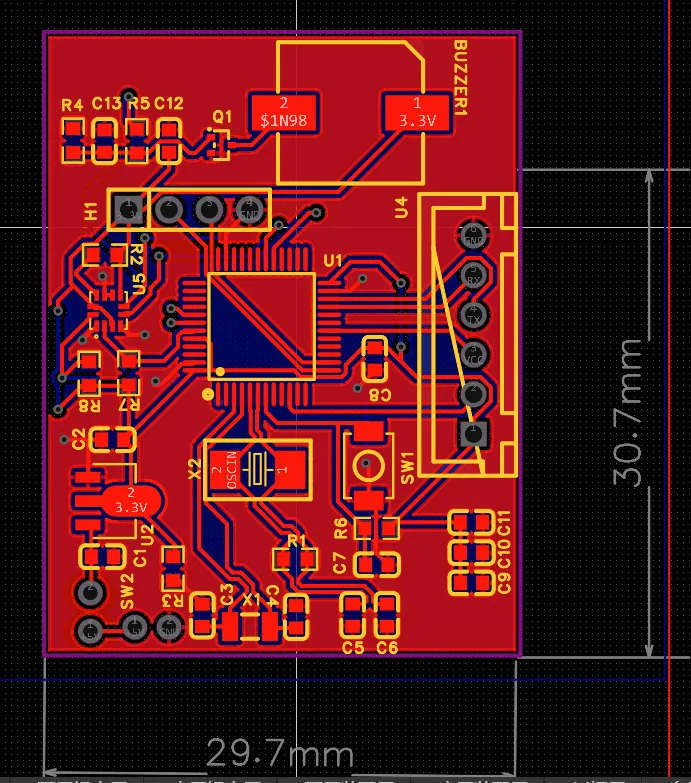
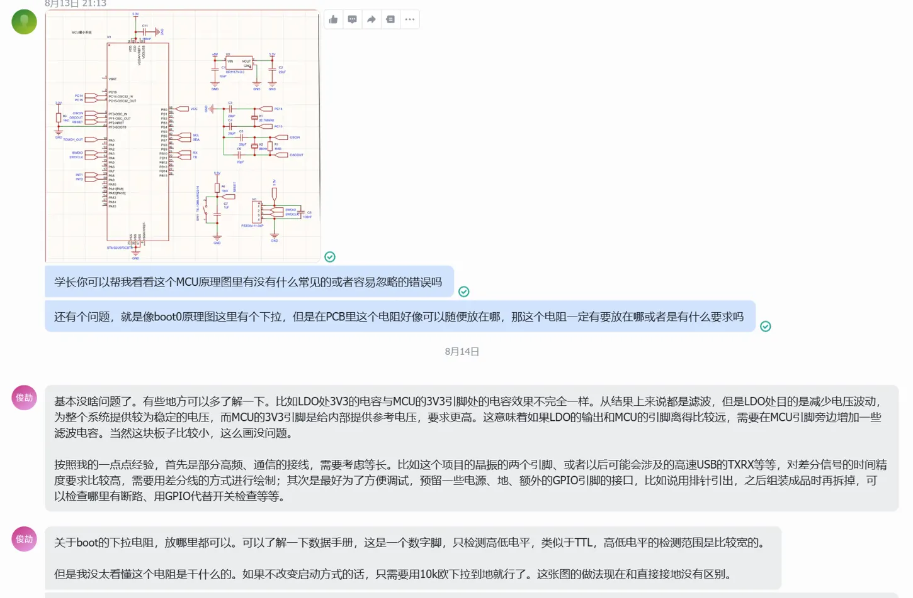

返回硬件项目索引
返回硬件项目索引伞下无贼
阅读项目文档 ↓项目尚处于概念阶段，效果图由 AI 生成。
雨天最古老的悬案，不是谁偷了伞，而是——每个人都坚称自己拿错了。
门口那一排长得一模一样的伞，是人类最早的共享经济，也是最没有产权概念的角落。这个项目，就是给这把伞补上一张身份证。
伞柄里塞了一颗指纹传感器。按一下，比对：是主人，它就是一把普通的伞，安静、体面、不吭声；不是你，它会在替你尖叫，响到整层楼都回头看。
它能存 50 枚指纹——够一个宿舍，绝不够一整栋楼。
硬件上它也不是玩具：STM32U073 主控、ZW101 指纹模组、SC7A20 加速度计负责判断"伞被拿起来了"，再加一颗有源蜂鸣器，负责让对方社交性死亡。
这个项目不是一把锁，而是让"拿错伞"这件事，第一次需要解释。




项目文档
项目介绍文档
项目介绍文档
项目概况
项目名称：雨伞守卫者
mentor：夏俊劼
项目简介
给我的伞加上指纹识别，在别人拿我的伞时触发报警，让他们社死，以此保卫我的雨伞。
现在因为尺寸问题，没有放到伞柄里面。只有一块张牙舞爪的板子。
---
项目成长
嵌入式代码
电路原理图
机械结构
没有打外壳，电路板努力缩小了，还是太大，无法放在雨伞的伞柄尺寸中
调试与迭代过程
这个板子其实已经是第二版了，很努力地把元件之间的间距减小，但是还要走线，实在做不到
焊板子的时候也是花了一些时间，最开始使用电烙铁，后面发现0603用电烙铁太难了，还有一个封装在底下的芯片，选择用加热台，自己买了个小小的，结果到手一看自己有的充电头不支持PD协议，还要配个充电头，又去买。到手了，开始焊接了，其他的都很好解决，MCU有连锡了，嗯对的，我没开钢网，我那时候觉得几块板子不用开钢网，结果就是我唯一的MCU烧坏了，又去买又等物流。大部分的时间都花在物流上了。
还得迭代，还要努力把板子画小，现在在想着把丝印去掉
AI使用说明
代码是用AI写的，然后自己在学习了电路相关知识之后，用AI帮助检查
交流与心得
心得：
1.买东西之前还要确认一些配套的内容，最好一次配齐；
2.买件的时候，最好多买个备份；
3.还要不断迭代。
4.不要想着卡DDL，总是有很多意外的，等物流最烦了。